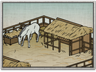

Requires
- Buildings: 
- Resources:

Enables
- Buildings:

- Units:


Basic Building Statistics (can be modified by difficulty level, arts, skills, traits and retainers)
- Cost: 1600
Description
Who is braver: the cavalryman, or his horse?
Where horses are available these stables allow the recruitment of a wide range of cavalry units. Battle tests the spirit of horses as surely as it tests their strength. Some are better suited to the clamour and din than others, and accept the training required of them. Warhorses must be able to ride headlong into an angry crowd, ignore flames, and keep going even when every natural instinct tells them to run. As might be expected, cavalry furniture for horses in Japan developed in a somewhat different fashion compared to the rest of the world. Japanese saddles were traditionally made of wood, and carefully designed to give the rider a stable platform for archery. Such considerations made them unsuitable for use over long distances, or at speed, as they were heavy and uncomfortable. The reins and bridle, however, were light and made of silk. The strangest pieces of equipment, to outside eyes, were the umagutsu. These straw sandals were shoes for the horses, and very similar to human footwear. The umagutsu provided extra traction in wet conditions, and this alone was no small matter when battles were often fought across paddy fields and farmland. They also helped quieten the sound of the horses' hooves.